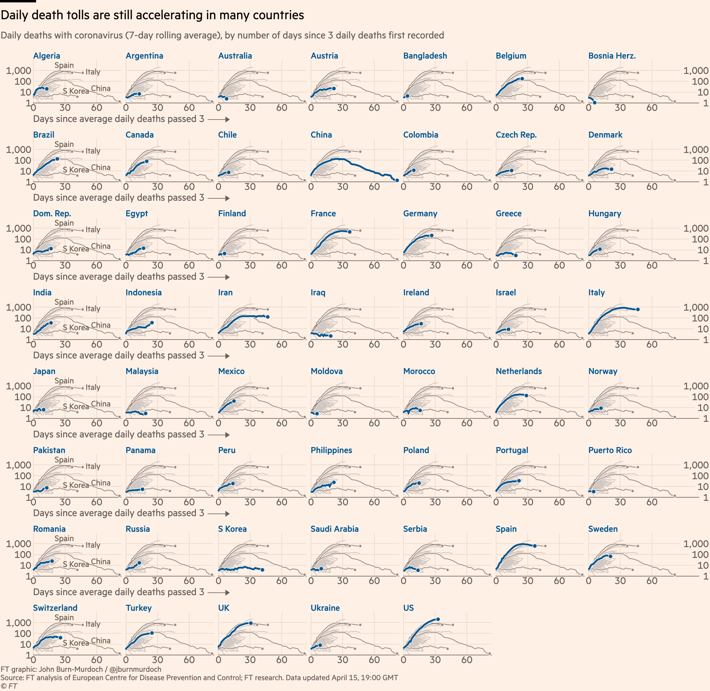
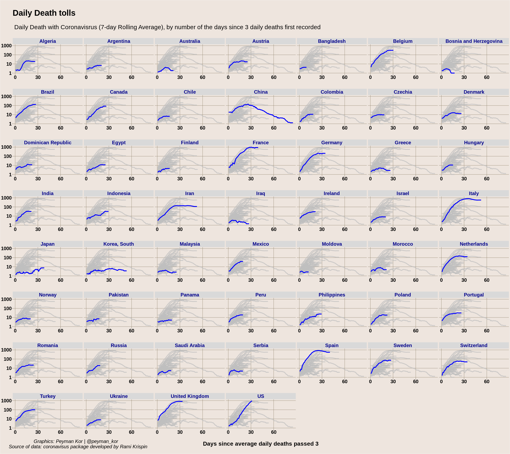

How to Reproduce Financial Times Style COVID19 Daily Reporting?

Journalist of the Financial Times, John Burn-Murdoch became quite well known during pandemic time with his I would call it “Enlightening” daily reporting of the evolution of the COVID19 around the world. I felt that it would be a good practice if someone could write blog on how to “produce” these plots because essentially, these plots can be used in many cases for example, you have the dataset of the three dimensional where the third dimension is categorical, and you want the compares the categories.
Here is the particular plot that I “try” to reproduce it,
Small multiples for daily new deaths in 54 countries:
— John Burn-Murdoch (@jburnmurdoch) April 15, 2020
• Norway locked down while Sweden didn’t; Norway’s daily death toll rising much more slowly than Sweden’s
• Australia faring well so far
• In Europe, Austria & Denmark faring well
All charts: https://t.co/JxVd2cG7KI pic.twitter.com/JulZYu5VJo
Allright this is the visualization of the Daily Death tolls (7-day moving average) VS. the days since average daily deaths passed the 3.

Let’s go started and see how we could reproduce such a nice visualization!

Libraries
Here I am using varieties of the libraries both for data wrangling and as well for visualization, but you could say 90% of the tools are available in the framework of the Tidyverse.
I wrote the small comment in front of th each package so you may know it better where I may use them:
library(tidyverse) # main package
library(zoo) # was used for moving average
#devtools::install_github("yutannihilation/gghighlight") # for highlight specif plot at each facet
library(gghighlight) #
#install.packages('ggthemes') # if you have not installed!
library(ggthemes) # may be needed for specif need
#remotes::install_github("Financial-Times/ftplottools") #
library(ftplottools) #
library(coronavirus) # used for corona datasetData Wrangling
Here we load the coronavirus dataset and we could have brief look on that:
data("coronavirus")
coronavirus %>%
as_tibble() %>%
head()# # A tibble: 6 x 7
# Province.State Country.Region Lat Long date cases type
# <chr> <chr> <dbl> <dbl> <date> <int> <chr>
# 1 "" Afghanistan 33 65 2020-01-22 0 confirmed
# 2 "" Afghanistan 33 65 2020-01-23 0 confirmed
# 3 "" Afghanistan 33 65 2020-01-24 0 confirmed
# 4 "" Afghanistan 33 65 2020-01-25 0 confirmed
# 5 "" Afghanistan 33 65 2020-01-26 0 confirmed
# 6 "" Afghanistan 33 65 2020-01-27 0 confirmedNow, the first thing we should do is that, I am going to select and work on the only countries that have been presented in our first plot, so I manually extracted those countries (I hate such a manual process!):
selected_cou_FT <- c("Algeria", "Argentina","Australia", "Austria",
"Bangladesh","Belgium","Bosnia and Herzegovina",
"Brazil","Canada","Chile","China","Colombia","Czechia", "Denmark",
"Dominican Republic","Egypt","Finland","France","Germany","Greece","Hungary",
"India","Indonesia","Iran","Iraq","Ireland","Israel","Italy","Japan","Malaysia",
"Mexico","Moldova","Morocco","Netherlands","Norway","Pakistan","Panama","Peru",
"Philippines","Poland","Portugal","Russia","Romania","Korea, South","Saudi Arabia",
"Serbia", "Spain","Sweden", "Switzerland","Turkey","United Kingdom", "Ukraine","US")Ok, now two important manuplation in the data must be done:
we need to sum all death case grouped by date and country region, since here we have additional rows that represent death in the sub region, so all of the must be summed up to one country.
Then the moving average of the death cases (7-days) are computed. Here, for initial first three days we have
NAfor the moving average since at moving average calculation, we need the three days before and after the middle point.Then since the plot of the FT says days after
daily deaths exceeded the 3 caseswe sliced the data from the day death>3…
At the end I am still feel there is some difference in my approach for calculation of the numbers with the John Burn-Murdoch, since although the processed data are similar, yet seems minor difference.
org_sel_con_movavg <- coronavirus %>%
as_tibble() %>%
filter(Country.Region %in% selected_cou_FT) %>%
filter(date <= as.Date('2020-04-15')) %>%
group_by(date, Country.Region) %>%
filter(type=="death") %>%
summarise(total_deth=sum(cases)) %>%
group_by(Country.Region) %>%
mutate(week_movavg=rollmean(total_deth, k = 7, fill = "extend")) %>%
slice(match(TRUE, total_deth>3):n()) %>%
mutate(id = row_number())Visulization
Allright, now first try the basic visualization using the facet_wrap:
ggplot(org_sel_con_movavg, aes(id, week_movavg, color=Country.Region)) +
geom_path(color='blue', lineend = "round", size=2) +
gghighlight() +
facet_wrap(~ Country.Region, nrow = 8, scales = "free_x") 
Well, not bad for first try :) . So here, now I am going to polish the plot, so will be adding the theme component. The comprehensive guide on what is the affect of each component in theme is on the plot are available in tidyverse website I wrote a small comment next to the each change, but you can change it depending on your selection:
mytheme <-
theme(panel.grid.major.x =element_line(colour = "wheat4"),
panel.grid.major.y =element_line(colour = "wheat4"),
panel.grid.minor.x = element_blank(),
panel.grid.minor.y = element_blank(),
axis.text = element_text(colour = "black", size = 24, face = "bold"),
axis.title.x = element_text(colour = "black", size = 28, face = "bold", vjust = 0.8),
axis.title.y = element_blank(),
strip.text = element_text(size=24, colour = "blue4", face = "bold"),
plot.title = element_text(color = "black", size = 40, face = "bold"),
plot.subtitle = element_text(color = "black", size = 30),
plot.tag = element_text(color = "black", face = "italic", size = 24, lineheight = 0.9),
plot.tag.position = c(0.15,0.02),
panel.background = element_rect(fill = "seashell2"),
plot.background = element_rect(fill = "seashell2"),
panel.border = element_blank(),
panel.spacing.y = unit(3, "lines")
) Ok, now our theme is ready but I should mention that finding the right theme is an iterative process, I test and plot the visulization, and then come back on tune it. Now in the below, two points are important to be mentioned:
- I use the package
herewhich change my directory the the place this index.Rmd file resides - I use the png(…) to save the file and write the outcome of the ggplot on this file.
here::dr_here()
png(file="testold.png",
width=2500, height=2225)
ggplot(org_sel_con_movavg, aes(id, week_movavg, color=Country.Region)) +
geom_path(color='blue', lineend = "round", size=2) +
gghighlight() +
facet_wrap(~ Country.Region, nrow = 8, scales = "free_x") +
scale_y_log10(limits=c(1,1000)) +
scale_x_continuous(breaks = c(0,30,60,90)) +
mytheme +
labs(title="\nDaily Death tolls",
x ="\n Days since average daily deaths passed 3 \n",
subtitle = " \n Daily Death with Coronavisrus (7-day Rolling Average), by number of the days since 3 daily deaths first recorded \n",
tag = "Graphics: Peyman Kor | @peyman_kor \n Source of data: coronavisus package developed by Rami Krispin")
dev.off()# png
# 2OK now the plot is saved and we can use the simple knitr:
here::set_here()
knitr::include_graphics("testold.png")
At the end, I feel this is a good practice to have decent visualization for three dimensional data when your third dimension is categorical. My goal was not to make this plot for COVID19 case, but I find this template is useful for many dataset to compare the quantities in the different categories.
If you have come along so far reading this post, thanks :) and you are welcome for feedback!
Peyman Kor
M.Sc in Mathematical Modeling and Computation
My research interests include distributed robotics, mobile computing and programmable matter.